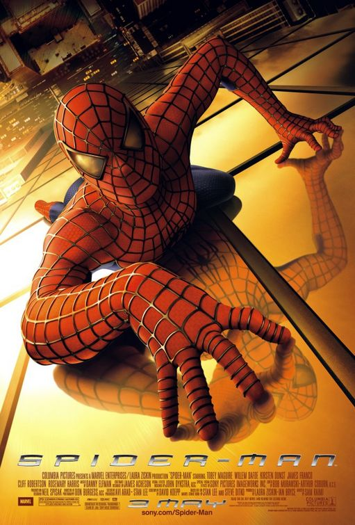
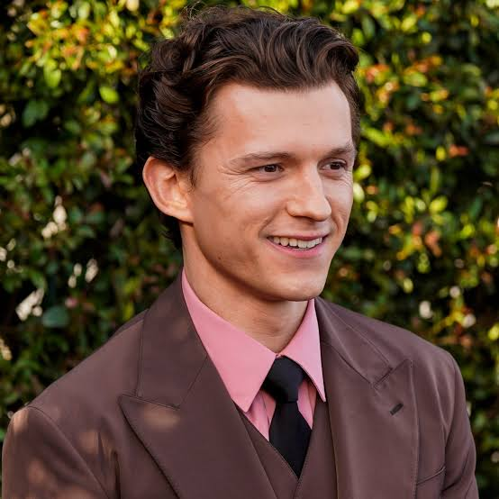
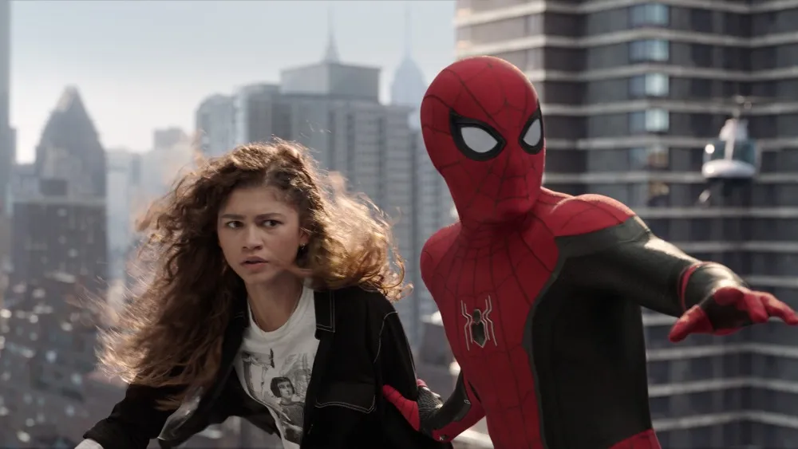
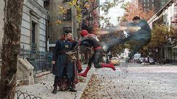
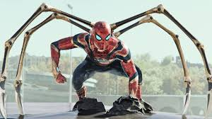
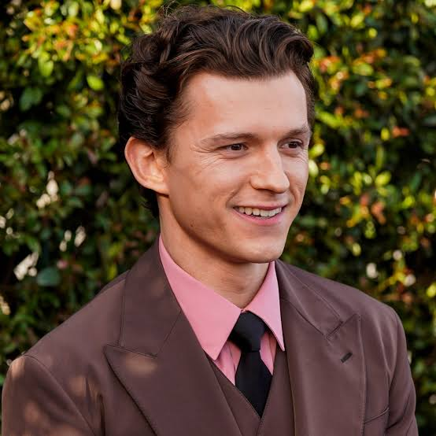
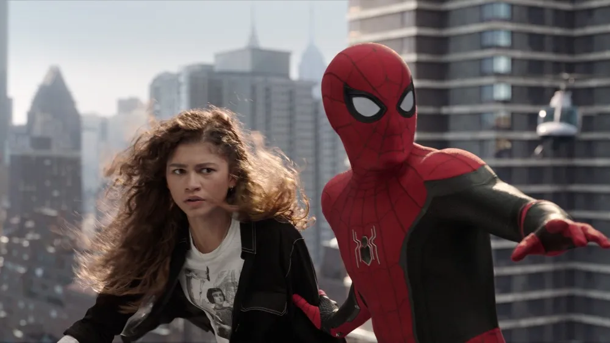
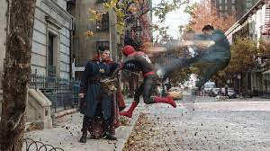
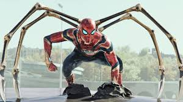

Avontuur
Spider-Man is een Amerikaanse superheldenfilm uit 2002 onder regie van Sam Raimi. De film is gebaseerd op de Marvel Comics-strips over de superheld Spider-Man. De film behandelt Spider-Mans oorsprong en zijn eerste grote gevecht met superschurk Green Goblin.
Een korte samenvatting van het verhaal
Peter Parkers geheime identiteit wordt aan de hele wereld onthuld. Wanhopig op zoek naar hulp, wendt Peter zich tot Doctor Strange om de wereld te laten vergeten dat hij Spider-Man is. De spreuk gaat vreselijk mis en verbrijzelt het multiversum, waarbij monsterlijke schurken binnenkomen die de wereld zouden kunnen vernietigen.Personages en cast
 







Trivia
- De eerste film die alleen al tijdens het openingsweekend $ 100 miljoen opbracht. Destijds had geen enkele film dit gedaan, zelfs niet na correctie voor inflatie.